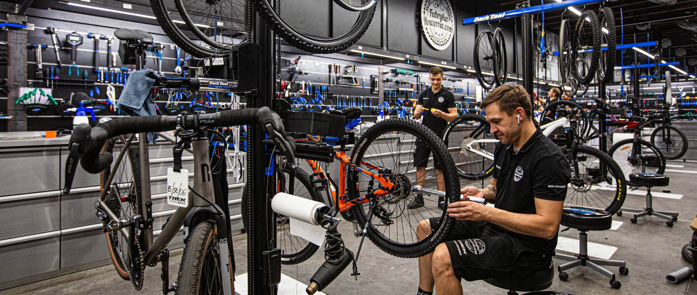

Regularny serwis roweru jest kluczowy dla jego długowieczności i bezpieczeństwa. Poniżej znajdziesz najważniejsze wskazówki dotyczące konserwacji roweru.
Jeśli zauważysz nietypowe dźwięki, trudności w zmianie biegów lub osłabione hamulce, warto odwiedzić profesjonalny serwis rowerowy.